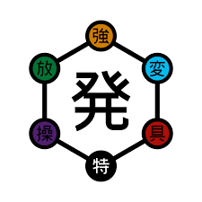
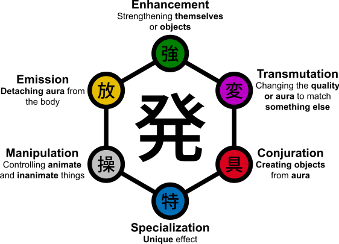
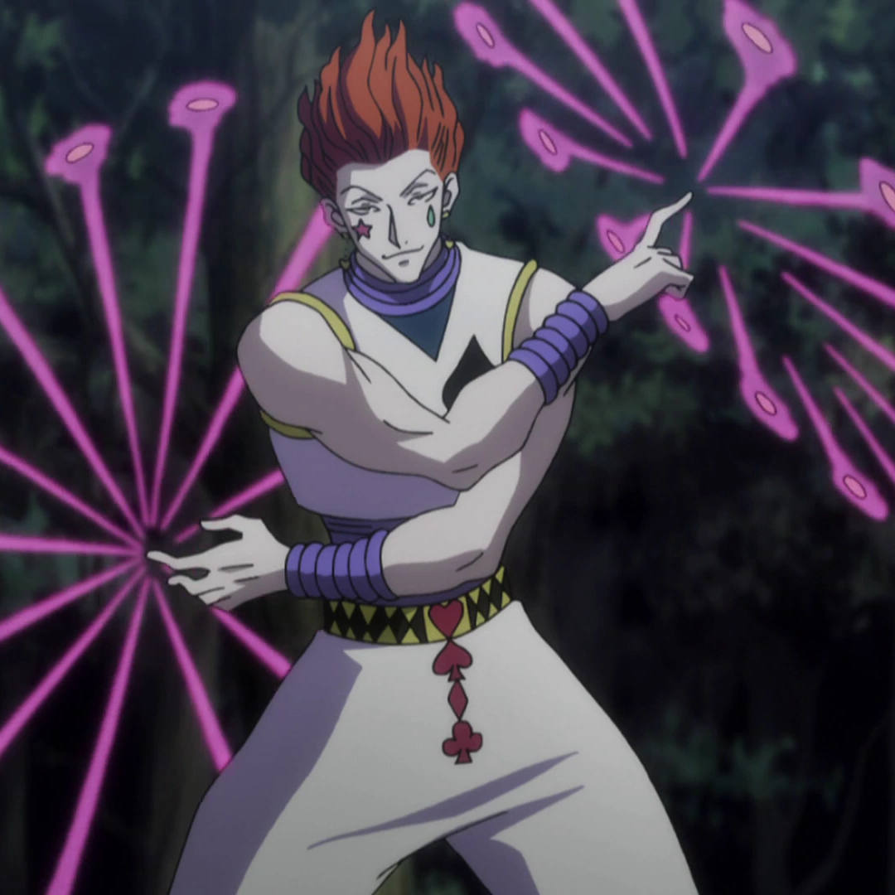

Hatsu

What to expect?
This will go over the formation, prupose and usage of Hatsu, the fourth fo the fundaental principles of Nen, it is also the most powerful. One's Hatsu will make or break them, fatal flaws in creation of Hatsu are irreperable.
What is Hatsu?
Hatsu represents the individual's unique expression of Nen, reflecting their personality, desires, and abilities. Hatsu allows users to shape and manipulate their aura into specialized techniques or abilities tailored to their preferences and strengths. Hatsu requires a deep understanding of one's inner self and extensive training to develop and refine. Through Hatsu, characters in "Hunter x Hunter" explore their potential, uncovering new abilities and strategies to overcome challenges and adversaries in their journey.
Hatsu types?
Possibly the most important part of HxH is that simple chart listed above, below will be a more detailed one. Your affinity determines what you can realistically do with your hatsu. You are not equally good at every affinity, some people are naturally emitters and thus those guys will have a really hard time with conjuration and manipulation.
Enhancer
Enhancers are specialists in enhancing their physical attributes and abilities using Nen. They prioritize strength, speed, and durability, making them formidable in close-quarters combat. Enhancers excel at overpowering opponents with sheer force and resilience.
Emission
Emitters are skilled at projecting their aura over a distance, allowing them to create powerful long-range attacks. They have the ability to separate their aura from their body and manipulate it freely, making them effective ranged fighters.
Manipultion
Manipulators have the ability to control and manipulate objects or beings using their aura. They excel at controlling and influencing the movements and actions of their targets, often using their abilities for strategic advantage or psychological warfare.
Specialization
Specialists possess unique and rare abilities that do not fit neatly into the other categories. They often have highly specialized talents or powers that set them apart from other Nen users. Specialists can possess a wide range of abilities, from mind control and fortune-telling to reality manipulation and beyond.
Conjuration
Conjurers: Conjurers have the ability to materialize objects or creatures using their aura. They can create complex and versatile constructs, ranging from weapons and tools to living beings and even alternate dimensions. Conjurers often specialize in creating specific types of objects tailored to their needs.
Transmutation
ransmuters have the ability to change the properties of their aura to mimic other substances or elements. They are known for their adaptability and creativity, often using their abilities to deceive or surprise opponents with unpredictable attacks.
What is Nen?

What to expect
Basic explanation of nen and it's fundamental principles
Advanced Nen
.jpg)
What to expect
Nen principles taken to the next level, this involved combinations of the base principles of nen for much more devestating results
Specific Hatsu abilities

What to expect
Examples of hatsu that really bring nen into the next tier in terms of power systems.